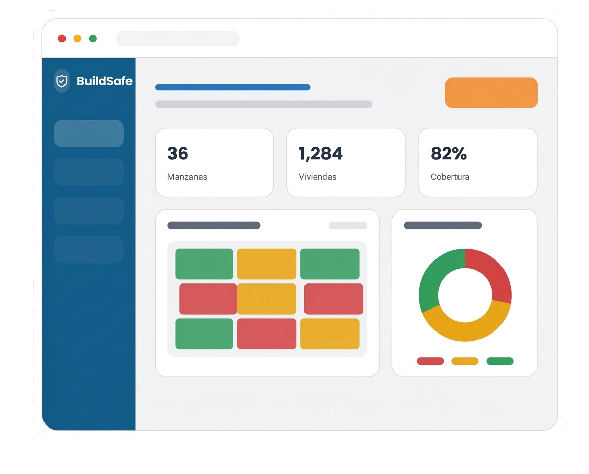
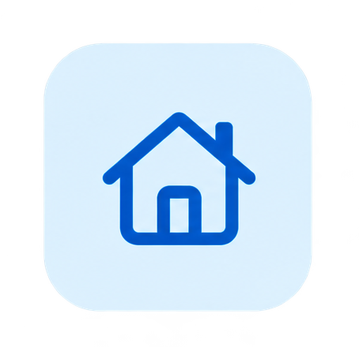
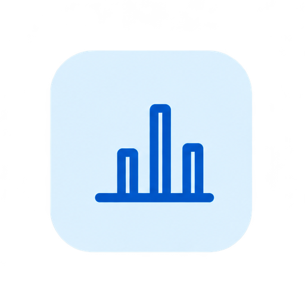

Recopila información en campo, visualiza riesgos por manzana y transforma evidencia comunitaria en decisiones claras y oportunas.

Las 30 historias de usuario se integran en un flujo simple, diseñado para equipos comunitarios y técnicos.

Fichas guiadas para registrar tipología, materiales, daños visibles y condiciones de ocupación.
Captura fotografías y observaciones aun sin conexión. Todo se sincroniza al recuperar señal.
Ubica cada registro por manzana y sector para construir una lectura territorial confiable.
Visualiza patrones, filtra niveles de riesgo y prioriza zonas que requieren atención inmediata.

Convierte los datos recopilados en métricas claras para decisiones y seguimiento comunitario.
Genera reportes trazables con cobertura, severidad y recomendaciones para cada periodo.
BuildSafe combina color, forma, iconografía y texto. Cada resultado se comunica con claridad para que ninguna decisión dependa únicamente de la percepción del color.
Conoce cómo BuildSafe puede acompañar la evaluación territorial de tu comunidad.